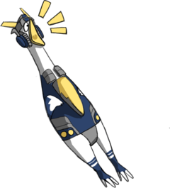

Bring the Spring

Opening this world
This world is about 35 MB — once the loading bar fills, you are in. It will not be long.
- Click to interact
- WASD or arrow keys to move
If the keyboard stops responding, click the game once. You can also open the raw game page in a new tab.